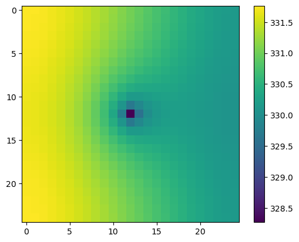
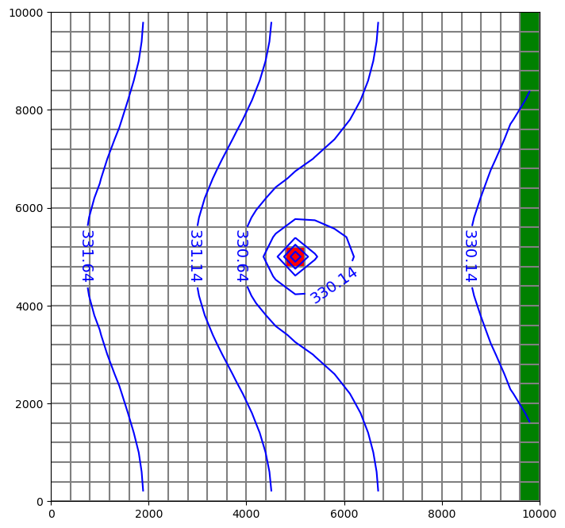
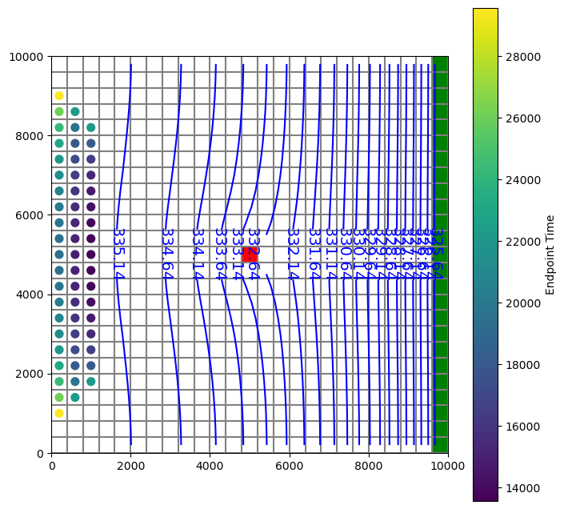
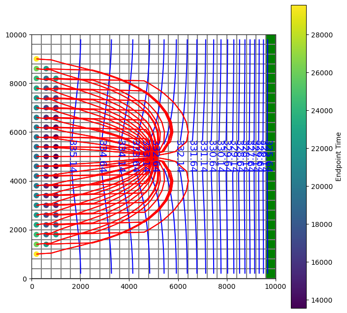

Note
Working with MODPATH 6
This notebook demonstrates forward and backward tracking with MODPATH. The notebook also shows how to create subsets of pathline and endpoint information, plot MODPATH results on ModelMap objects, and export endpoints and pathlines as shapefiles.
[1]:
import sys
import shutil
import os
import glob
from tempfile import TemporaryDirectory
import numpy as np
import pandas as pd
import matplotlib as mpl
import matplotlib.pyplot as plt
# run installed version of flopy or add local path
try:
import flopy
except:
fpth = os.path.abspath(os.path.join("..", ".."))
sys.path.append(fpth)
import flopy
print(sys.version)
print("numpy version: {}".format(np.__version__))
print("matplotlib version: {}".format(mpl.__version__))
print("pandas version: {}".format(pd.__version__))
print("flopy version: {}".format(flopy.__version__))
3.10.10 | packaged by conda-forge | (main, Mar 24 2023, 20:08:06) [GCC 11.3.0]
numpy version: 1.24.3
matplotlib version: 3.7.1
pandas version: 2.0.1
flopy version: 3.3.7
Load the MODFLOW model, then switch to a temporary working directory.
[2]:
from pathlib import Path
# temporary directory
temp_dir = TemporaryDirectory()
model_ws = temp_dir.name
model_path = Path.cwd().parent.parent / "examples" / "data" / "mp6"
mffiles = list(model_path.glob("EXAMPLE.*"))
m = flopy.modflow.Modflow.load("EXAMPLE.nam", model_ws=model_path)
hdsfile = flopy.utils.HeadFile(os.path.join(model_path, "EXAMPLE.HED"))
hdsfile.get_kstpkper()
hds = hdsfile.get_data(kstpkper=(0, 2))
Plot RIV bc and head results.
[3]:
plt.imshow(hds[4, :, :])
plt.colorbar();

[4]:
fig = plt.figure(figsize=(8, 8))
ax = fig.add_subplot(1, 1, 1, aspect="equal")
mapview = flopy.plot.PlotMapView(model=m, layer=4)
quadmesh = mapview.plot_ibound()
linecollection = mapview.plot_grid()
riv = mapview.plot_bc("RIV", color="g", plotAll=True)
quadmesh = mapview.plot_bc("WEL", kper=1, plotAll=True)
contour_set = mapview.contour_array(
hds, levels=np.arange(np.min(hds), np.max(hds), 0.5), colors="b"
)
plt.clabel(contour_set, inline=1, fontsize=14);

create_mpsim releases a single particle on iface=6 of each top cellNote: in FloPy version 3.3.5 and previous, the Modpath6 constructor dis_file, head_file and budget_file arguments expected filenames relative to the model workspace. In 3.3.6 and later, full paths must be provided — if they are not, discretization, head and budget data are read directly from the model, as before.
[5]:
from os.path import join
mp = flopy.modpath.Modpath6(
modelname="ex6",
exe_name="mp6",
modflowmodel=m,
model_ws=str(model_path),
)
mpb = flopy.modpath.Modpath6Bas(
mp, hdry=m.lpf.hdry, laytyp=m.lpf.laytyp, ibound=1, prsity=0.1
)
# start the particles at begining of per 3, step 1, as in example 3 in MODPATH6 manual
# (otherwise particles will all go to river)
sim = mp.create_mpsim(
trackdir="forward",
simtype="pathline",
packages="RCH",
start_time=(2, 0, 1.0),
)
shutil.copy(model_path / "EXAMPLE.DIS", join(model_ws, "EXAMPLE.DIS"))
shutil.copy(model_path / "EXAMPLE.HED", join(model_ws, "EXAMPLE.HED"))
shutil.copy(model_path / "EXAMPLE.BUD", join(model_ws, "EXAMPLE.BUD"))
mp.change_model_ws(model_ws)
mp.write_name_file()
mp.write_input()
success, buff = mp.run_model(silent=True, report=True)
if success:
for line in buff:
print(line)
else:
raise ValueError("Failed to run.")
Processing basic data ...
Checking head file ...
Checking budget file and building index ...
Run particle tracking simulation ...
Processing Time Step 1 Period 3. Time = 4.10000E+05
Particle tracking complete. Writing endpoint file ...
End of MODPATH simulation. Normal termination.
Read in the endpoint file and plot particles that terminated in the well.
[6]:
fpth = os.path.join(model_ws, "ex6.mpend")
epobj = flopy.utils.EndpointFile(fpth)
well_epd = epobj.get_destination_endpoint_data(dest_cells=[(4, 12, 12)])
# returns record array of same form as epobj.get_all_data()
[7]:
well_epd[0:2]
[7]:
rec.array([(50, 0, 2, 0., 29565.62, 1, 0, 2, 0, 6, 0, 0.5, 0.5, 1., 200., 9000., 339.1231, 1, 4, 12, 12, 2, 0, 1. , 0.9178849, 0.09755219, 5200. , 5167.154, 9.755219, b'rch'),
(75, 0, 2, 0., 26106.59, 1, 0, 3, 0, 6, 0, 0.5, 0.5, 1., 200., 8600., 339.1203, 1, 4, 12, 12, 4, 0, 0.7848778, 1. , 0.1387314 , 5113.951, 5200. , 13.87314 , b'rch')],
dtype=[('particleid', '<i4'), ('particlegroup', '<i4'), ('status', '<i4'), ('time0', '<f4'), ('time', '<f4'), ('initialgrid', '<i4'), ('k0', '<i4'), ('i0', '<i4'), ('j0', '<i4'), ('cellface0', '<i4'), ('zone0', '<i4'), ('xloc0', '<f4'), ('yloc0', '<f4'), ('zloc0', '<f4'), ('x0', '<f4'), ('y0', '<f4'), ('z0', '<f4'), ('finalgrid', '<i4'), ('k', '<i4'), ('i', '<i4'), ('j', '<i4'), ('cellface', '<i4'), ('zone', '<i4'), ('xloc', '<f4'), ('yloc', '<f4'), ('zloc', '<f4'), ('x', '<f4'), ('y', '<f4'), ('z', '<f4'), ('label', 'O')])
[8]:
fig = plt.figure(figsize=(8, 8))
ax = fig.add_subplot(1, 1, 1, aspect="equal")
mapview = flopy.plot.PlotMapView(model=m, layer=2)
quadmesh = mapview.plot_ibound()
linecollection = mapview.plot_grid()
riv = mapview.plot_bc("RIV", color="g", plotAll=True)
quadmesh = mapview.plot_bc("WEL", kper=1, plotAll=True)
contour_set = mapview.contour_array(
hds, levels=np.arange(np.min(hds), np.max(hds), 0.5), colors="b"
)
plt.clabel(contour_set, inline=1, fontsize=14)
mapview.plot_endpoint(well_epd, direction="starting", colorbar=True);

Write starting locations to a shapefile.
[9]:
fpth = os.path.join(model_ws, "starting_locs.shp")
print(type(fpth))
epobj.write_shapefile(
well_epd, direction="starting", shpname=fpth, mg=m.modelgrid
)
<class 'str'>
No CRS information for writing a .prj file.
Supply an valid coordinate system reference to the attached modelgrid object or .export() method.
wrote ../../../home/runner/work/flopy/flopy/.docs/Notebooks
Read in the pathline file and subset to pathlines that terminated in the well .
[10]:
# make a selection of cells that terminate in the well cell = (4, 12, 12)
pthobj = flopy.utils.PathlineFile(os.path.join(model_ws, "ex6.mppth"))
well_pathlines = pthobj.get_destination_pathline_data(dest_cells=[(4, 12, 12)])
Plot the pathlines that terminate in the well and the starting locations of the particles.
[11]:
fig = plt.figure(figsize=(8, 8))
ax = fig.add_subplot(1, 1, 1, aspect="equal")
mapview = flopy.plot.PlotMapView(model=m, layer=2)
quadmesh = mapview.plot_ibound()
linecollection = mapview.plot_grid()
riv = mapview.plot_bc("RIV", color="g", plotAll=True)
quadmesh = mapview.plot_bc("WEL", kper=1, plotAll=True)
contour_set = mapview.contour_array(
hds, levels=np.arange(np.min(hds), np.max(hds), 0.5), colors="b"
)
plt.clabel(contour_set, inline=1, fontsize=14)
mapview.plot_endpoint(well_epd, direction="starting", colorbar=True)
# for now, each particle must be plotted individually
# (plot_pathline() will plot a single line for recarray with multiple particles)
# for pid in np.unique(well_pathlines.particleid):
# modelmap.plot_pathline(pthobj.get_data(pid), layer='all', colors='red');
mapview.plot_pathline(well_pathlines, layer="all", colors="red");

Write pathlines to a shapefile.
[12]:
# one line feature per particle
pthobj.write_shapefile(
well_pathlines,
direction="starting",
shpname=os.path.join(model_ws, "pathlines.shp"),
mg=m.modelgrid,
verbose=False,
)
# one line feature for each row in pathline file
# (can be used to color lines by time or layer in a GIS)
pthobj.write_shapefile(
well_pathlines,
one_per_particle=False,
shpname=os.path.join(model_ws, "pathlines_1per.shp"),
mg=m.modelgrid,
verbose=False,
)
(numpy.record, {'names': ['x', 'y', 'z', 'time', 'k', 'particleid'], 'formats': ['<f4', '<f4', '<f4', '<f4', '<i4', '<i4'], 'offsets': [20, 24, 28, 16, 32, 0], 'itemsize': 64})
No CRS information for writing a .prj file.
Supply an valid coordinate system reference to the attached modelgrid object or .export() method.
wrote ../../../home/runner/work/flopy/flopy/.docs/Notebooks
(numpy.record, {'names': ['x', 'y', 'z', 'time', 'k', 'particleid'], 'formats': ['<f4', '<f4', '<f4', '<f4', '<i4', '<i4'], 'offsets': [20, 24, 28, 16, 32, 0], 'itemsize': 64})
No CRS information for writing a .prj file.
Supply an valid coordinate system reference to the attached modelgrid object or .export() method.
wrote ../../../home/runner/work/flopy/flopy/.docs/Notebooks
Replace WEL package with MNW2, and create backward tracking simulation using particles released at MNW well.
[13]:
m2 = flopy.modflow.Modflow.load(
"EXAMPLE.nam", model_ws=str(model_path), exe_name="mf2005"
)
m2.get_package_list()
[13]:
['DIS', 'BAS6', 'WEL', 'RIV', 'RCH', 'OC', 'PCG', 'LPF']
[14]:
m2.nrow_ncol_nlay_nper
[14]:
(25, 25, 5, 3)
[15]:
m2.wel.stress_period_data.data
[15]:
{0: 0,
1: rec.array([(4, 12, 12, -150000., 0.)],
dtype=[('k', '<i8'), ('i', '<i8'), ('j', '<i8'), ('flux', '<f4'), ('iface', '<f4')]),
2: rec.array([(4, 12, 12, -150000., 0.)],
dtype=[('k', '<i8'), ('i', '<i8'), ('j', '<i8'), ('flux', '<f4'), ('iface', '<f4')])}
[16]:
node_data = np.array(
[
(3, 12, 12, "well1", "skin", -1, 0, 0, 0, 1.0, 2.0, 5.0, 6.2),
(4, 12, 12, "well1", "skin", -1, 0, 0, 0, 0.5, 2.0, 5.0, 6.2),
],
dtype=[
("k", int),
("i", int),
("j", int),
("wellid", object),
("losstype", object),
("pumploc", int),
("qlimit", int),
("ppflag", int),
("pumpcap", int),
("rw", float),
("rskin", float),
("kskin", float),
("zpump", float),
],
).view(np.recarray)
stress_period_data = {
0: np.array(
[(0, "well1", -150000.0)],
dtype=[("per", int), ("wellid", object), ("qdes", float)],
)
}
[17]:
m2.name = "Example_mnw"
m2.remove_package("WEL")
mnw2 = flopy.modflow.ModflowMnw2(
model=m2,
mnwmax=1,
node_data=node_data,
stress_period_data=stress_period_data,
itmp=[1, -1, -1],
)
m2.get_package_list()
[17]:
['DIS', 'BAS6', 'RIV', 'RCH', 'OC', 'PCG', 'LPF', 'MNW2']
Write and run MODFLOW.
[18]:
m2.change_model_ws(model_ws)
m2.write_name_file()
m2.write_input()
success, buff = m2.run_model(silent=True, report=True)
if success:
for line in buff:
print(line)
else:
raise ValueError("Failed to run.")
MODFLOW-2005
U.S. GEOLOGICAL SURVEY MODULAR FINITE-DIFFERENCE GROUND-WATER FLOW MODEL
Version 1.12.00 2/3/2017
Using NAME file: Example_mnw.nam
Run start date and time (yyyy/mm/dd hh:mm:ss): 2023/05/04 16:05:32
Solving: Stress period: 1 Time step: 1 Ground-Water Flow Eqn.
Solving: Stress period: 2 Time step: 1 Ground-Water Flow Eqn.
Solving: Stress period: 2 Time step: 2 Ground-Water Flow Eqn.
Solving: Stress period: 2 Time step: 3 Ground-Water Flow Eqn.
Solving: Stress period: 2 Time step: 4 Ground-Water Flow Eqn.
Solving: Stress period: 2 Time step: 5 Ground-Water Flow Eqn.
Solving: Stress period: 2 Time step: 6 Ground-Water Flow Eqn.
Solving: Stress period: 2 Time step: 7 Ground-Water Flow Eqn.
Solving: Stress period: 2 Time step: 8 Ground-Water Flow Eqn.
Solving: Stress period: 2 Time step: 9 Ground-Water Flow Eqn.
Solving: Stress period: 2 Time step: 10 Ground-Water Flow Eqn.
Solving: Stress period: 3 Time step: 1 Ground-Water Flow Eqn.
Run end date and time (yyyy/mm/dd hh:mm:ss): 2023/05/04 16:05:33
Elapsed run time: 0.051 Seconds
Normal termination of simulation
Create a new Modpath6 object.
[19]:
mp = flopy.modpath.Modpath6(
modelname="ex6mnw",
exe_name="mp6",
modflowmodel=m2,
model_ws=model_ws,
)
mpb = flopy.modpath.Modpath6Bas(
mp, hdry=m2.lpf.hdry, laytyp=m2.lpf.laytyp, ibound=1, prsity=0.1
)
sim = mp.create_mpsim(trackdir="backward", simtype="pathline", packages="MNW2")
mp.change_model_ws(model_ws)
mp.write_name_file()
mp.write_input()
success, buff = mp.run_model(silent=True, report=True)
if success:
for line in buff:
print(line)
else:
raise ValueError("Failed to run.")
Processing basic data ...
Checking head file ...
Checking budget file and building index ...
Run particle tracking simulation ...
Processing Time Step 1 Period 1. Time = 2.00000E+05
Particle tracking complete. Writing endpoint file ...
End of MODPATH simulation. Normal termination.
Read in results and plot.
[20]:
pthobj = flopy.utils.PathlineFile(os.path.join(model_ws, "ex6mnw.mppth"))
epdobj = flopy.utils.EndpointFile(os.path.join(model_ws, "ex6mnw.mpend"))
well_epd = epdobj.get_alldata()
well_pathlines = (
pthobj.get_alldata()
) # returns a list of recarrays; one per pathline
[21]:
fig = plt.figure(figsize=(8, 8))
ax = fig.add_subplot(1, 1, 1, aspect="equal")
mapview = flopy.plot.PlotMapView(model=m2, layer=2)
quadmesh = mapview.plot_ibound()
linecollection = mapview.plot_grid()
riv = mapview.plot_bc("RIV", color="g", plotAll=True)
quadmesh = mapview.plot_bc("MNW2", kper=1, plotAll=True)
contour_set = mapview.contour_array(
hds, levels=np.arange(np.min(hds), np.max(hds), 0.5), colors="b"
)
plt.clabel(contour_set, inline=1, fontsize=14)
mapview.plot_pathline(
well_pathlines, travel_time="<10000", layer="all", colors="red"
);

[22]:
try:
# ignore PermissionError on Windows
temp_dir.cleanup()
except:
pass